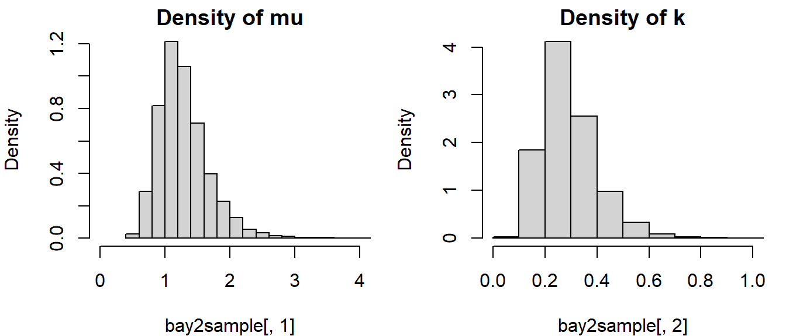

Lab 7 Optimisation and all that (including Bayesian approaches)
1 Learning goals
You will learn how to:
Deal with optimization problems and assess confidence limits
Estimate parameters in a Bayesian framework and how parameter uncertainty can be assessed
1.1 Optimisation problems and assessing the confidence limits of parameter estimates
Fitting a model to data requires you to specify a relationship between variables. After specifying this relationship we need to fit parameters of this model that best fits the data. This fitting is done through computer algorithms (optimizers). However, sometimes it may be hard to fit a model to data. After having found the best fitting model, you want to assess how certain you are about the parameter estimates. For assessing the uncertainty of model parameters several methods exist that have pros and cons.
If you feel comfortable with fitting models to data you are ready for a more challenging exercise. If you do not feel comfortable yet, go back to question 5.2 and practise a bit more.
This exercise has two purposes. First you will learn that an innocent looking function can be challenging to fit. Second, you will learn to assess the uncertainty in the parameter values. For assessing the uncertainty in the parameter estimates there are two methods: the profiling method and the quadratic approximation. Bolker recommends to use the likelihood profile for assessing the uncertainty in the parameters because this one is more accurate than the approxation based on the Hessian matrix.
Take the first dataset of the six datasets you have worked with earlier on. Assume that the function was generated by the monomolecular function \(a(1-e^{(-bx)}\). Fit this model with normally distributed errors through this data with
mle2and optim methodNelder-Mead. Choose four different starting points of the optimisation:start_a = c(5,10,20,30),start_b = c(0.001,0.005,0.01,0.1)and compare the NLL of those four optimisations. Plot the curves into the plot with data and try to understand what happened. You can set the \(\sigma\) to 3.To understand the behaviour of the optimisation routine we will plot the likelihood surface over a range of values of \(a\) and \(b\). For \(a\) choose a number of parameter values in the range of 0-40 and for \(b\) choose a number of values in the range 0.1-10. Calculate for each combination the NLL and plot the NLL surface using
contourplot. For more insight into the functioning of what the optimisation method did, you can add the starting points that you gave to mle2 and the best fitting points, usepoints()for this. Do you have a clue why the optimisation did not find the minimum point in the landscape? Now zoom in and choose values for \(b\) in the range of 0.001-0.03 and check again the NLL surface.hint: See Bolker Lab 6 for inspiration on coding.
hint: You can use a for a double for-loop to run over all parameters
hint: Store the NLL results in a matrix (you can make a 100x100 matrix by
matrix(NA,nrow=100,ncol=100)).Calculate the confidence intervals of the parameters through constructing the likelihood profile. Consult page 106 of Bokler or Lab 6 for how to calculate the confidence intervals based on the likelihood profile. Use the following pseudocode to achieve this:
- Adapt the likelihood function such that one parameter is not optimised but chosen by you, say parameter \(a\).
- Vary \(a\) of a range and optimise the other parameteters.
- Plot the NLL as a function of parameter \(a\).
- Find the values of \(a\) that enclose \(-L + \chi^2(1-\alpha)/2\). In
Rthis can be done throughqchisq(0.95,1)/2. - Compare your results with the results from the
Rfunctionconfint().confint()uses the profiling method along with interpolation methods.
(time permitting) Calculate the confidence intervals through the quadratic approximation. Take the following steps to achieve this:
- Get the standard error of the parameter estimates through
vcov. Note thatvcovreturn the variance/covariance matrix - Calculate the interval based on the fact that the 95% limits are 1.96 (qnorm(0.975,0,1)) standard deviation units away from the mean.
- Get the standard error of the parameter estimates through
(time permitting) Plot the confidence limits of the both method and compare the results. Is there a big difference between the methods?
To assess the uncertainty in the predictions from the model you can construct population prediction intervals (PPIs, see 7.5.3 Bolker). Population prediction intervals shows the interval in which a new observation will likely fall. To construct the PPI take the following steps
Simulate a number of parameter values taken the uncertainty in the parameter estimates into account.
hint: If the fitted mle object is called
mle2.obj, then you can extract the variance-covariance matrix by usingvcov(mle2.obj). You can extract the mean parameter estimates by usingcoef(mle2.obj). Now you are ready to simulate 1000 combinations of parameter values throughz = mvrnorm(1000,mu=coef(mle2.obj),Sigma=vcov(mle2.obj)).mvrnormis a function to randomly draw values from a multivariate normal distribution.Predict the mean response based on the simulated parameter values and the values of \(x\)
hint: make a for-loop and predict for each simulated pair of parameter values the mean for a given x. Thus
mu = z[i,1]*(1-exp(-z[i,2]*x))Draw from a normal distribution with a mean that was predicted in the previous step and the sd that you simulated in step a.
hint:
pred = rnorm(length(mu),mean=mu,sd=z[i,3]). Store pred in a matrix with each simulated dataset in a seperate row.Calculate for each value of \(x\) the 2.5% and the 97.5% quantiles
hint: If the predictions are stored in a matrix
mat, you can useapply(mat,2,quantile,0.975)to get the upper limit.
1.2 Bayesian parameter estimation: negative binomial
In this section we will practice parameter estimation using the Bayesian method on the same negative binomial example as before (Section 6.1). The purpose of this exercise is to gain intuition of how Markov Chain Monte Carlo (MCMC) algorithms work and better understand the differences (and similarities) between maximum likelihood and Bayesian parameter estimation. The MCMC algorithm implemented below can be useful for relatively simple models such as the ones covered in this course. For more complex data analysis we recommend to use dedicated R packages that implement more powerful (and automated) algorithms. A list of such packages can be found in the task view on Bayesian Inference (https://cran.r-project.org/web/views/Bayesian.html).
1.2.1 From Bayes rule to log posterior
The aim of Bayesian analysis is to estimate the parameters of a model conditional on observed data (\(P(\theta | D)\), known as posterior distribution) given the likelihood (\(L(\theta|D) = P(D|\theta)\)) and prior distributions of the parameters (\(P(\theta)\)), according to Bayes rule:
\[ P(\theta | D) = \frac{P(D|\theta) P(\theta)}{P(D)} \]
Details on Bayes rule are given in section 4.3 and 6.2.2 of the book. Note that the only unknown in the right hand side of Bayes rule is \(P(D)\). However, we know that \(P(D) = \int P(D|\theta)P(\theta)d\theta\). Therefore, in order to calculate the posterior distribution, we could calculate this integral. Any integration method would work, but integration will not be feasible for a large number of parameters. In practice, a more popular approach is to generate samples from the posterior distribution, while avoiding the integral. This is achieved by so-called Markov Chain Monte Carlo (MCMC) algorithms. These algorithms will provide a random sample from the posterior distribution given a formulation of the problem as:
\[ \log(P(\theta | D)) \propto \log(P(D|\theta)) + \log(P(\theta)) = \mathcal{L} + \log(P(\theta)) \]
Where \(\mathcal{L}\) is the positive log-likelihood and \(\propto\) means “proportional to”. These algorithms work with logarithms for the same reason as in maximum likelihood estimation (i.e., to avoid numerical instability due to very large or very small numbers that would result from multiplication).
The first step of Bayesian parameter estimation is to build a function that calculates the log-posterior density for every parameter value. We will use the example of the negative binomial from section 6.1. This example fits a negative binomial distribution parameterized by its mean (mu) and size (k) both of which have to be positive.
In a Bayesian approach, we need to assign prior probabilities to each of the parameters, which means choosing a distribution and its parameters, based on prior knowledge. Of course, without a context, it is not possible to specify meaningful prior distributions (and this is arguably the hardest step in any Bayesian analysis), but for the sake of this exercise let’s assume that we can represent our prior beliefs with Normal distributions centered around 0 and with a standard deviation of 2 (in practice only half of these prior distributions are being used as mu and k are positive, but that is fine). This essentially means that were are 99% certain that mu and k will be lower than 4.6, prior to seeing any data.
We have to construct a function that can return the sum of the log-likelihood and log-prior densities for a given combination of mu and k in order to use MCMC (remember, this is not the exact log-posterior because of the unknown normalizing constant):
LPfun1 = function(p, dat = x) {
# Mean and size of the negative binomial (use exp to force them to be positive)
mu = exp(p[1])
k = exp(p[2])
# Logarithm of the prior distributions on mu and k
# (0 and 2 are parameters chosen by the user, they represent prior beliefs)
lp_mu = dnorm(mu, 0, 2, log = TRUE)
lp_k = dnorm(k, 0, 2, log = TRUE)
log_prior = lp_mu + lp_k
# Log-likelihood of the data under the model
LL = sum(dnbinom(dat,mu=mu,size=k,log=TRUE))
# Sum of the log-likelihood and the log-prior
LL + log_prior
}The main difference between LPfun1 and NLLfun1 created in section 6.1 is that the new function includes the log-prior densities of mu and k (lp_mu and lp_k, respectively) and that it returns the sum of log-likelihood + log-prior densities.
1.2.2 Sampling from posterior: Metropolis-Hastings algorithm
Below is a simple version of the Metropolis-Hastings algorithm (section 7.3.1 of the book), with a multivariate Normal proposal distribution (you need to install package mvtnorm first!). Note that this function is written in a generic fashion, that is, it will work with any user-defined function that is assigned to the first argument (model) and any data required by said function is passed through the ... argument (this is the strategy is used in many R functions, including optim).
The inputs of the MH function (see below for code) are:
model: Function that calculates the non-normalized log-posterior (i.e.LPfun1).init: Initial values for the parameters. The closer to the “true” values the faster the MCMC algorithm will converge to the posterior distribution.sigma: Variance-covariance matrix of the proposal distribution used to calculate jumps in parameter space.niter: Number of iterations the algorithm will run for.burn: Fraction of iterations that will be used as burn-in (check section 7.3.2). These iterations will not be used for analysis but are required for convergence of the MCMC algorithm.seed: Seed for pseudo-random number generator that allows reproducing results.
The algorithm keeps track of all the parameter values it visits and stores them in the variable chain. Each iteration, it proposes new values for each parameter (proposal) sampled from a multivariate Normal distribution centered at the current values. The probability of accepting the proposal is equal to the exponent of the difference in log posterior densities (paccept, see Equation 7.3.2 in the book, taking into account that the proposal distribution is symmetric). If the proposal is accepted, then it is added to the chain and becomes the new current values (i.e., the algorithm “moves” to that location). After the run is finished, the values in chain are split between the burn-in samples and after burn-in. The variable acceptance calculates the fraction of jumps that were accepted (do not confuse with the probability of accepting an individual jump!). The higher this number is, the more efficient the algorithm is in exploring the posterior distribution.
library(mvtnorm)
MH = function(model, init, Sigma = diag(init/10), niter = 3e4, burn = 0.5,
seed = 1134, ...) {
# To make results reproducible you should set a seed (change among chains!!!)
set.seed(seed)
# Pre-allocate chain of values
chain = matrix(NA, ncol = length(init), nrow = niter)
# Chain starts at init
current = init
lp_current = model(current, ...)
# Iterate niter times and update chain
for(iter in 1:niter) {
# Generate proposal values from multivariate Normal distribution
proposal = rmvnorm(1, mean = current, sigma = Sigma)
# Calculate probability of acceptance (proposal distribution is symmetric)
lp_proposal = model(proposal, ...)
paccept = min(1, exp(lp_proposal - lp_current))
# Accept the proposal... or not!
# If accept, update the current and lp_current values
accept = runif(1) < paccept
if(accept) {
chain[iter,] = proposal
lp_current = lp_proposal
current = chain[iter,]
} else {
chain[iter,] = current
}
}
# Calculate the length of burn-in
nburn = floor(niter*burn)
# Calculate final acceptance probability after burn-in (fraction of proposals accepted)
acceptance = 1 - mean(duplicated(chain[-(1:nburn),]))
# Package the results
list(burnin = chain[1:nburn,], sample = chain[-(1:nburn),],
acceptance = acceptance, nburn = nburn)
}So let’s tackle the negative binomial problem with the algorithm above. First, let’s regenerate the data that was used in the previous section:
set.seed(1001)
mu.true=1
k.true=0.4
x = rnbinom(50,mu=mu.true,size=k.true)Now we can run MH with some values. I want to make the point that choosing a good proposal distribution matters for an efficient MCMC algorithm. So let’s start with a variance-covariance matrix that is not reasonable (because it is too wide):
Sigma = diag(c(10,10))Now we can run MH combined with the LPfun1 function and some initial values:
init = log(c(1,1))
bay1 = MH(LPfun1, init, Sigma, burn = 0.3, dat = x)The first result you want to check is the acceptance probability to see how succesful proposals were:
bay1$acceptance[1] 0.01957143This is terrible! 98% of the proposed values were rejected so it would take really long to get a representative sample from the posterior distribution. The next step is usually to take a look at the traces of the values sampled by the MCMC (noticed that the sampling was done on the log transformation of the parameters as they are positive):
par(mfrow = c(2,1), mar = c(4,4,0.5,0.5), las = 1)
plot(bay1$sample[,1], t = "l", ylab = "Trace of log(mu)")
plot(bay1$sample[,2], t = "l", ylab = "Trace of log(k)")
The low probability of acceptance means that the traces look like “squiggly lines”, getting stuck at different values for hundreds of iterations (i.e., horizontal sections in the traces). This slows down the effective sampling and can introduce biases in the estimates (unless the algorithm runs for very long).
Note that more modern MCMC algorithms (that R packages specialized on Bayesian statistics will use internally) will automatically tune the proposal distribution or even use alternatives methods to propose values that are more robust. However a poor man’s tuned MCMC may suffice for this introduction (and for simple models with few parameters) and it works as follows:
Calculate the value that maximizes the posterior distribution using
optim(a.k.a Maximum A Posteriori estimate or MAP for short).Estimate the variance-covariance matrix of the posterior distribution using the Hessian matrix returned by
optim(analogous to what we do for maximum likelihood estimation).Run
MHusing the above results as the values forinitandsigma, respectively.
The reason why this works better is because points 1 and 2 will often give a good first approximation of the posterior distribution, especially for large data (in which case the posterior distribution approaches a Normal distribution). This means that MH will be sampling from a distribution similar to the target distribution and hence a higher proportion of proposals will be accepted (intuitively, fewer values that are far in the tails of the posterior distribution will be proposed). This approach can be implemented as:
mapfit = optim(fn = LPfun1, par = log(c(1,1)),
hessian = TRUE, method = "BFGS",
control = list(fnscale = -1), dat = x)
Sigma = solve(-mapfit$hessian)
init = mapfit$par
bay2 = MH(LPfun1, init, Sigma, burn = 0.3)Notice that we should use control = list(fnscale = -1) because we want to maximize the posterior probability, not minimize it. That is also the reason why I add a negative sign in front of the Hessian as in solve(-mapfit$hessian) (in previous examples we were minimizing the negative log likelihood and we did not include the negative sign in front of the Hessian).
We can see that the matrix Sigma obtained from the Hessian around the MAP estimate is different from the one assumed in the first MH run (specifically, the variances are much smaller):
Sigma [,1] [,2]
[1,] 0.078897091 0.002920995
[2,] 0.002920995 0.122861528These lower variances mean that the Markov chain does not wonder far into the tails of the posterior distribution but rather remains in the area of high probability. Thus, the new run has a higher acceptance probability:
bay2$acceptance[1] 0.5599524Now this is the good. 56% of the time the candidates will be accepted, ensuring that the chain samples efficiently from the posterior. The traces will approach white noise (these are often called “fuzzy caterpillars” in the community):
par(mfrow = c(2,1), mar = c(4,4,0.5,0.5), las = 1)
plot(bay2$sample[,1], t = "l", ylab = "Trace of log(mu)")
plot(bay2$sample[,2], t = "l", ylab = "Trace of log(k)")
At this point we would normally calculate more diagnostics to build up more confidence on the results of the MCMC chains, but we will keep it simple in this introduction. The object bay2$sample contains a random sample from the posterior from which we can calculate several properties. First, remember that we took the logarithm of the parameters to avoid negative values, so we need to undo this transformation in the result:
bay2sample = exp(bay2$sample)We can visualize the estimates for each parameter using density (more common) or hist (easier to interpret):
par(mfrow = c(1,2), mar = c(4,4,1.5,1))
hist(bay2sample[,1], main = "Density of mu", freq = F, xlim = c(0,4))
hist(bay2sample[,2], main = "Density of k", freq = F, xlim = c(0,1))
One striking feature is that the distributions are not symmetric, they have a longer tail to the right. This is typical of positive parameters that are close to 0. A consequence of this is that the mean, median and mode of the distributions will differ (though in in this case not so much). Let’s compare all the estimates we have so far for the negative binomial fitted to these data:
map = exp(mapfit$par)
meanp = colMeans(bay2sample)
medianp = c(median(bay2sample[,1]), median(bay2sample[,2]))
c(map, meanp, medianp)[1] 1.2209093 0.2876172 1.2897290 0.2926038 1.2222475 0.2745380The 95% credible intervals (analogous to 95% confidence intervals) can be calculated with the quantile function applied directly to the sample from the posterior:
t(apply(bay2sample, 2, quantile, probs = c(0.025, 0.975))) 2.5% 97.5%
[1,] 0.7078096 2.2138543
[2,] 0.1348619 0.5519341